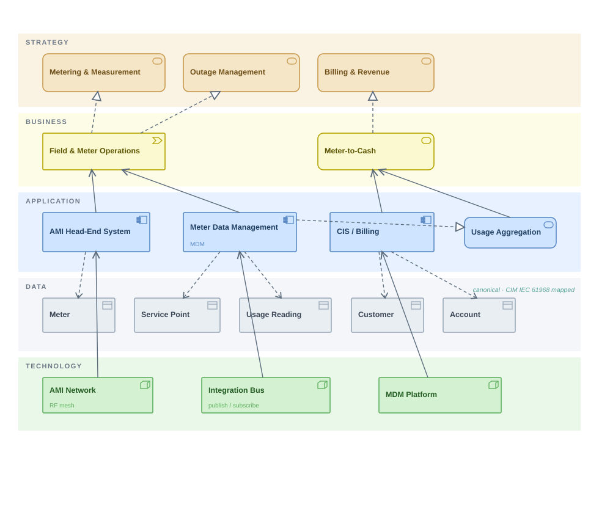
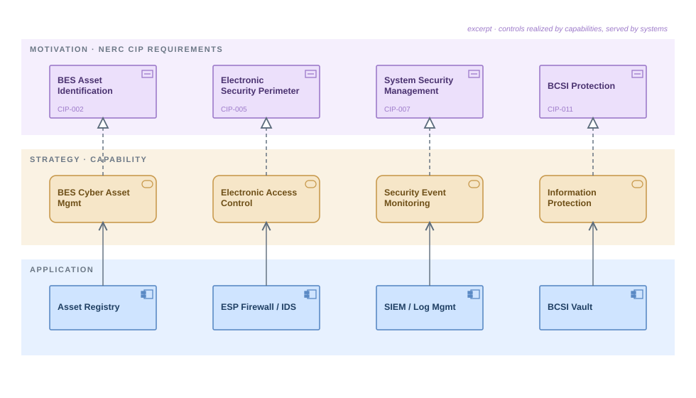

Turning Point Studio builds standards-based TOGAF/ArchiMate reference architectures for the electric-utility industry — modeled foundations a solution or enterprise architect can license, adapt, and ship instead of starting every engagement from a blank canvas. An optional AI add-on runs on the architect's own models to find capability gaps, check compliance coverage, and draft the decision records and stakeholder briefs that usually eat the week.
The catalog is organized around the architectural problems electric utilities actually carry on their roadmaps — not generic enterprise AI.
Each pack is delivered as standards-based ArchiMate models you open in your own tool — not slideware. The packs are still in active build; these excerpts and downloadable samples show the modeling standard, so you can judge the rigor for yourself before anything ships.


Explore the full catalog as a system → Every pack on one map, one example model each, and any element clickable for deeper detail.
Electric utilities don't need another transformation pitch. They need architecture that holds up against regulatory scrutiny, legacy integration constraints, and operations teams who will live with the result for the next twenty years.
Electric-utility context drives every artifact — generation, transmission, distribution, market operations, NERC/FERC/WECC boundaries, the OT/IT seam — not enterprise IT in general.
Strong defaults, narrow scope, clear trade-offs. The point is to remove decisions from the architect's plate — not add to them.
Designs are evaluated against the people who run the system at 2 a.m., not the people who saw the deck.
Every offering publishes only after the underlying capability is real, repeatable, and supportable. Nothing gets sold from a slide.
Turning Point Studio is an enterprise-architecture practice for the electric-utility industry. It packages hard-won pattern recognition — what works inside utilities, what dies on contact — into licensable, standards-based reference architectures that solution and enterprise architects adapt to their own environment.
The work is authored from seventeen years inside electric-utility transmission operations and NERC CIP compliance — control-room and audit reality, not framework theory. The focus is narrow on purpose: the studio serves architects working inside investor-owned utilities and public power, with federal power marketing administrations, cooperatives, and ISOs/RTOs as adjacent ground. Not the broader enterprise market.
The studio is in active build phase. Architectural offerings publish here as each one is real and supportable. Electric-utility architects who want to be on the short list when those publish are welcome to reach out directly — no waitlist, no signup, no false scarcity.
 Turning Point
Turning Point